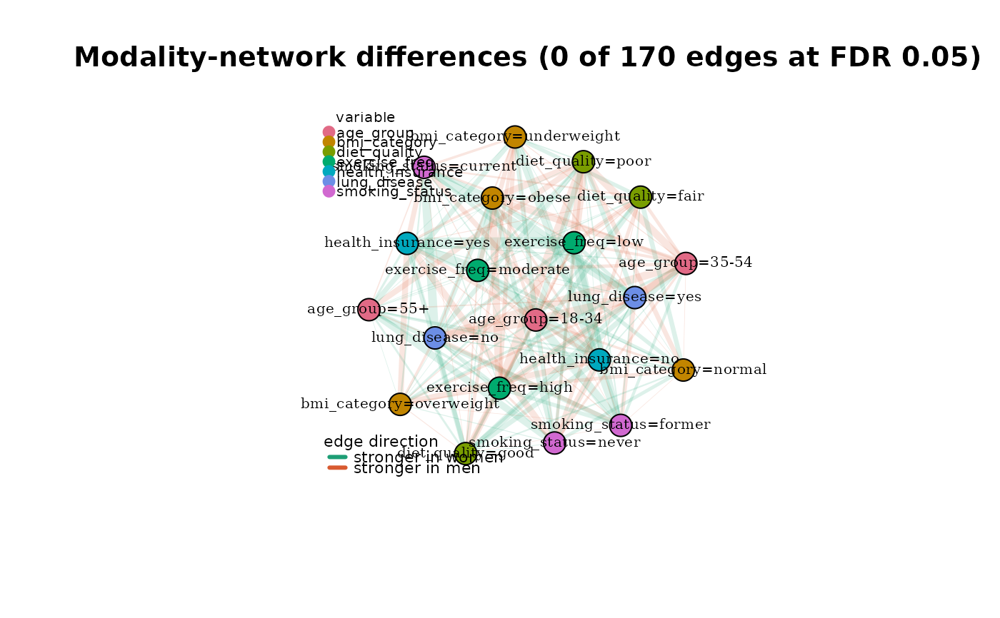

Plot modality-network differences on a single graph
Source:R/plot_modality_difference.R
plot_modality_difference.RdRenders the edge-wise differences between two catmodgraph
objects (from test_modality_edge_differences) on one
shared-layout graph, so the reader can see where in the joint
categorical structure two samples disagree, not just that they
disagree.
Usage
plot_modality_difference(
x,
reference = NULL,
alpha_fdr = 0.05,
alpha_floor = 0.15,
show_nonsig = TRUE,
group_labels = c("stronger in x", "stronger in y"),
color_pos = "#1D9E75",
color_neg = "#D85A30",
layout_fn = igraph::layout_with_fr,
vertex_size = 14,
edge_scale = 8,
title = NULL,
...
)Arguments
- x
A
catmodedgetestobject, typically fromtest_modality_edge_differences.- reference
Optional. One of the two source
catmodgraphobjects, or a list of both. Used only to derive the node set and (by default) the layout. IfNULL(default), a graph is built from the union of edges inx$edge_tableand laid out directly; node-variable colouring is still recovered from the"Variable=level"naming convention.- alpha_fdr
Numeric in (0, 1]. Adjusted p-value cutoff for "significant" edges. Non-significant edges are drawn with a floor opacity set by
alpha_floor. Default0.05.- alpha_floor
Numeric in [0, 1]. Minimum edge opacity, applied to non-significant edges and as a lower bound on the
-log10(p_adjusted)alpha mapping. Default0.15.- show_nonsig
Logical. If
FALSE, edges withp_adjusted >= alpha_fdrare omitted entirely. IfTRUE(default), they are drawn atalpha_floor.- group_labels
Character vector of length 2. Legend labels for the two groups; the first is the direction
obs_diff > 0(stronger inx), the secondobs_diff < 0(stronger iny). Defaultc("stronger in x", "stronger in y").- color_pos, color_neg
Character. Hex colours for the two directions. Defaults are a teal / coral pair chosen to match the signed-residual palette in
plot.catmodgraph.- layout_fn
Function. An igraph layout function applied to the reference graph. Default
igraph::layout_with_fr.- vertex_size
Numeric. Vertex size. Default
14.- edge_scale
Numeric. Multiplier for edge widths after scaling \(|obs_diff|\) into
[0, 1]. Default8.- title
Character. Plot title. Default
NULL(auto).- ...
Further arguments passed to
plot.igraph.
Value
Invisibly returns the igraph object used for plotting,
with edge attributes obs_diff and p_adjusted set.
Details
Edge colour encodes the sign of the difference weight_x - weight_y:
edges stronger in x are drawn in one colour, edges stronger in
y in another. Edge width scales with \(|weight_x - weight_y|\).
Edge opacity scales with -log10(p_adjusted) so that edges with
smaller adjusted p-values dominate the visual field; non-significant
edges remain visible but faded.
This is a complement to the plot() method for
catmodedgetest objects, which
renders a bar chart of the top-n edges by adjusted p-value. Use the bar
chart for a ranked-list read and this function for a network-structural
read.
Interpretation caveats
The sign of the difference is group-order-dependent: if
xandyare swapped at the testing step, every colour flips. Thegroup_labelsargument lets you write the legend in plain language rather than relying on the reader to remember which group was which.Edges absent from both input graphs (weight 0 in each) will have
obs_diff == 0and are omitted byedges = "union"intest_modality_edge_differences. If you called the test withedges = "all", consider pre-filtering the edge table before plotting to avoid a dense low-magnitude background.The
-log10(p_adjusted)alpha mapping is clamped at 4 (i.e.,p_adjusted <= 1e-4all plot at full opacity). This prevents a single ultra-significant edge from visually dominating the entire panel.
See also
test_modality_edge_differences,
plot.catmodedgetest(),
compare_modality_graphs
Examples
# \donttest{
data(survey_health)
df_f <- subset(survey_health, sex == "female")[, -1]
df_m <- subset(survey_health, sex == "male")[, -1]
mg_f <- build_modality_graph(df_f)
mg_m <- build_modality_graph(df_m)
edge_test <- test_modality_edge_differences(
mg_f, mg_m, n_perm = 200, edges = "union",
seed = 1, verbose = FALSE
)
plot_modality_difference(
edge_test,
reference = list(mg_f, mg_m),
group_labels = c("stronger in women", "stronger in men")
)

# }